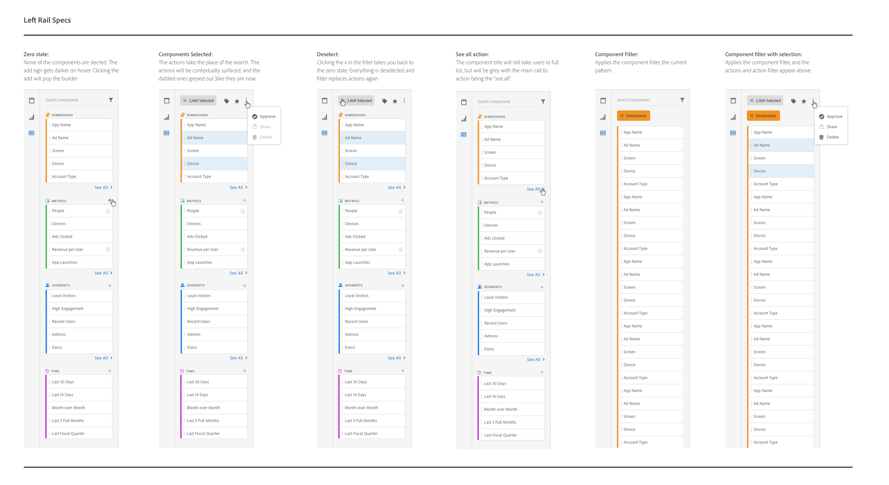

Spectrum: Adobe's design library
Transitioning a entire product to Adobe's new design library, Spectrum.
Problem
Applying a work-in-progress design library to a product full of custom components, and inline styling. A product that was an entire design library behind all the other Adobe products.
Approach
- Conduct an audit
- Transition all of the components already available in Spectrum to the new design library
- Document what was still missing
- Design a Spectrum version
- Code and contribute back to the Spectrum library
- Collect customer feedback and iterate on designs
Solution
Since this project was primarily visual design, I produced a series of mocks of the main pages of Analytics showing what they would look like once Spectrum was applied. I would then meet with engineering every week to review and make sure the correct components were being used, and everything transitioned properly. Where there we large unknowns I would design a Spectrum version, review with the Spectrum team, and then pass the blessed mocks to engineering.
Role
Design lead
Category
- User Interface
- Design Library
- Visual Design
The Process
Below is an example of the documentation that was contributed back to the Spectrum design library. The left rail in Analytics is full of components that can be dragged out and dropped onto the canvas on the left to create or add to a project. Other solutions were in need of the same UI component, now they can pull from the same styled and code.
The Result
The easy part of the approach has been tackled, I am currently still leading out on this design effort. We are now tackling the next big phase: designing Spectrum versions of each missing component, anc contributing them back to the larger Spectrum library.